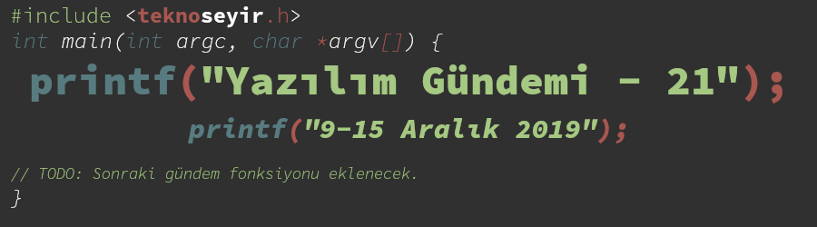
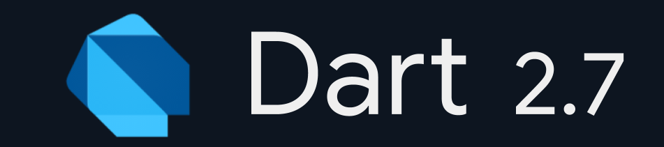
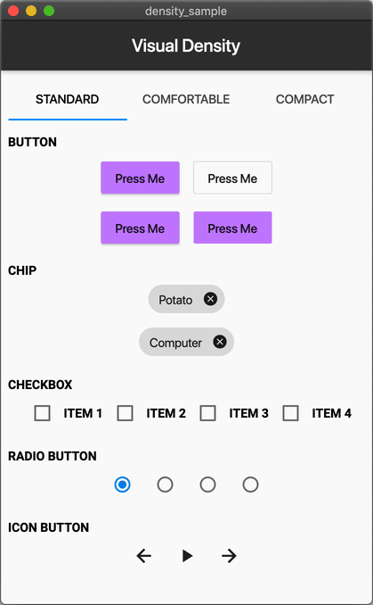
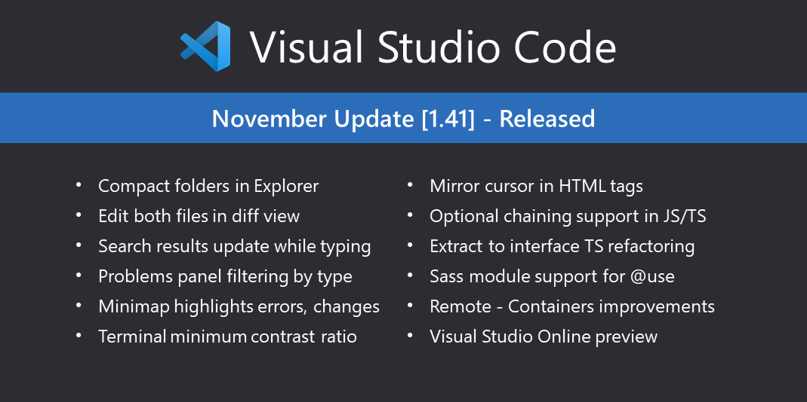

Yazılım Gündemi - 21
9-15 Aralık 2019
İçindekiler
- 1. Windows sistemleri etkileyen kritik Git güvenlik açıkları kapatıldı
- 2. NPM, dosyalara erişim sağlamaya yol açan bir güvenlik açığını kapattı
- 3. NGINX Rusya ofisi polis tarafından basıldı ve 2 kişi tutuklandı
- 4. Dart programlama dilinin 2.7 sürümü duyuruldu
- 5. Flutter 1.12 duyuruldu
- 6. Android Açık Kaynak Projesine code search web arayüzü eklendi
- 7. Mikro-kontrolcüler için Qt kütüphanesinin 1.0 sürümü yayınlandı
- 8. Visual Studio Code Kasım 2019 (v1.41) sürümü yayınlandı
- 9. Yaklaşan Etkinlikler
- 10. Diğer Haberler
- 11. Lisans

< Önceki Gündem | 9-15 Aralık 2019 | Sonraki Gündem >
1 Windows sistemleri etkileyen kritik Git güvenlik açıkları kapatıldı
Aslında güvenlik açıkları sadece Windows sistemleri etkilemiyor, aynı zamanda sisteminizde NTFS olarak formatlanmış bir disk bölümünüz varsa bu açıklarsan sizde etkilenebilirsiniz. Git geliştiricileri, mümkün olan en kısa sürede Git sürümlerinizi güncellemenizi öneriyor. Güvenlik açıklarının teknik detayları başka güvenlik sorunlarına neden olabileceği için henüz yayınlanmamış fakat yol açtıkları sorunlar hakkında kısa bilgilendirmelere ulaştım. Şöyle ki:
- CVE-2019-1348:
git fast-importkomutunun--export-marksargümanından kaynaklanan dosya yollarının üzerine yazmayla ilgili bir güvenlik açığı. - CVE-2019-1349:
git clonekomutu ile resurcive olarak submodule indirirken uzaktan kod çalıştırmaya yarayan güvenlik açığı. - CVE-2019-1350: Unutulan bir tırnak işaretiyle
git clone --recurse-submoduleskomutunun farklı komutlar çalıştırmasına yol açan bir güvenlik açığı. - CVE-2019-1351:
git clonekomutunun, Windows'daki alfabetik olmayan (C,D yerine 1 ya da Unicode karakter içeriyorsa) mantıksal disk bölümlerinin üzerine yazmasına neden olan güvenlik güvenlik açığı. - CVE-2019-1352:
git cloneişlemi sırasında NTFS Alternate Date Streams ile ilişkili bir sorun yüzünden.gitklasörü içerisindeki dosyaların üzerine yazmaya neden olan bir güvenlik açığı. - CVE-2019-1353: WSL üzerinde Git kullanırken NTFS'in Shortnames özelliğinden
kaynaklanan bir sorun yüzünden
git clonesırasında uzaktan kod çalıştırmaya imkan sağlayan bir güvenlik açığı. - CVE-2019-1354: Windows'daki klasör isimlerinde \ işaretinin farklı amaç için kullanılmasından doğan dosyaların üzerine yazabilmeyi sağlayan bir güvenlik açığı.
- CVE-2019-1387: Submodule isimlerinin doğrulaması sırasında oluşan hatadan doğan güvenlik açığı.
- CVE-2019-19604:
.gitmodulesdosyasında bir scripti ya da çalıştırılabilir dosyayı işaret eden komut barındırmaya yarayan bir güvenlik açığı.
Görüldüğü gibi güvenlik açıklarının sayısı epey bir fazla, bu yüzden mutlaka mümkün olan en kısa zamanda Git sürümlerinizi güncelleyin. Eğer yakın bir zamanda güncelleyemeyecek durumdaysanız şunları yapmaktan kaçının:
git clone --recurse-submodulevegit submodule updatekomutlarını çalıştırmak,- Güvenmediğiniz depolar için
git fast-importkomutunu çalıştırmak, - Güvenmediğiniz depoları NTFS formatlı bir disk barındıran sistem üzerinde clone etmek.
Bu güvenlik açıklarını kapatan Git sürümleri ise şu şekilde: v2.24.1, v2.23.1, v2.22.2, v2.21.1, v2.20.2, v2.19.3, v2.18.2, v2.17.3, v2.16.6, v2.15.4 ve v2.14.6.
2 NPM, dosyalara erişim sağlamaya yol açan bir güvenlik açığını kapattı
Güvenlik açığı hakkında yeterince teknik bilgi sağlanmasa da NPM geliştiricileri, package.json dosyasının işlenmesi sırasında doğan bir güvenlik açığı kullanıcının bilgisayarındaki herhangi bir dosyaya erişim ve değiştirme yetkisi verilmesine neden oluyor. Anladığım kadarıyla bu işlemi yapabilmesi için paket yayınlayıcısının package.json dosyasına bir takım binary kodlar eklemesi gerekiyor. Sorun package.json dosyasının işlenmesinden doğduğu için aynı güvenlik açığı yarn paket yöneticisinde de mevcut. NPM takımı, npm sistemindeki kayıtlı tüm package.json dosyalarında bu tarz bir açıktan faydalanan paketleri bulmaya çalışmış fakat bir şey çıkmamış. Tabii ki yine de gerekli güncellemelerin en kısa zamanda yapılmasını şiddetle tavsiye ediyorlar.
3 NGINX Rusya ofisi polis tarafından basıldı ve 2 kişi tutuklandı
NGINX'i hepimiz, şu anda en çok kullanılan web sunucu araçlarından birisi olarak tanıyoruz, geliştiricisi Igor Sysoev, NGINX'i 2004 yılında açık kaynak olarak lisanslı şekilde duyurmuştu fakat o zamanlarda henüz NGINX kendisinin tam zamanlı işi değildi ve Rusya'nın popüler arama motorlarından biri olan Rambler için çalışıyormuş. Bu haftanın gündemine oturmasının sebebi de bundan kaynaklı. Geliştirici başka bir firma için çalışırken o firmanın sağladığı imkanlar ile bu yazılımı geliştirdiği için bir telif hakkı sorunu ortaya çıkmış ve polis baskını ile kaynak kodlar ve çeşitli belgelere el konulmuş. Aslında bu durumun yeni ortaya çıkması çok ilginç çünkü geliştirici 2012 yılında verdiği bir röportajda (rusça) kendisi de söylemişti "o zamanlar Rambler için çalışıyordum" diye fakat ilgili firmanın yeni aklına düşmüş herhalde ya da başka bir takım olaylar var. Ayrıca kodlara el koymaları da ilginç olmuş NGINX zaten açık kaynak, el koymak için baskın yapmanıza gerek yoktu. Zaten böyle bir telif hakkı sorunu için polis baskını yapmak ayrı bir saçmalık gibi geliyor bana. Baskında polisler şöyle mi seslendiler acaba: "Şimdi sakin ol ve elindeki klavyeyi yavaşça bana doğru uzat evlat!" :)
Tutuklanan kişilerin de NGINX'in yaratıcı Igor Sysoev ve şirketin ortaklarından biri olduğu yönünde haberler var. Konu HackerNews ve Reddit gibi platformlarda yaklaşık bir gün boyunca üst sıralarda kaldı ve geliştiricilerin gündemine oturdu.
4 Dart programlama dilinin 2.7 sürümü duyuruldu

Google tarafından geliştirilen, Flutter isimli hibrit mobil uygulamalar geliştirmeye yarayan uygulama çatısıyla popülerlik kazanan yine Google tarafından geliştirilen programlama dili Dart programlama dilinin bu hafta içerisinde 2.7 numaralı sürümü duyuruldu. Aynı zamanda Dart, bu yıl yayınlanan GitHub Octoverse raporunda (bkz: Yazılım Gündemi - 17) en hızlı büyüyen birinci programlama dili seçilmişti. Dille ilgili hiçbir deneyimim yok ama eklenen özellikleri anlayabildim. O halde 2 özelliğe birlikte bakalım:
4.1 Eklenti metodları
Bu özellik sayesinde artık herhangi bir tip için özel bir fonksiyon ekleyebileceksiniz. Tip'in sizin tarafınızdan yaratılmış olması da gerekmiyor. Örnek verecek olursak:
extension ParseNumbers on String { int parseInt() { return int.parse(this); } } main() { int i = '55'.parseInt(); print(i); }
Yukarıda String veri tipine parseInt isminde bir fonksiyon ekledik ve String
içerisine yazılan bir sayının int veri tipine çevrilmesini sağladık.
4.2 Null Safety
Henüz preview aşamasında olsa da faydalı bir özellik. Örnek üzerinden inceleyelim:
class Kisi { String ad; DateTime dogumTarihi; Kisi(this.ad, this.dogumTarihi); void tanit() { print(ad); int dogumYili = dogumTarihi?.year; print("${DateTime.now().year - dogumYili} yıl önce doğmuştur"); } }
Örnekte dikkat etmeniz gereken ? karakterinin kullanımı. ? karakteri ile
yapılan aslında şuydu: dogumTarihi property'sinde değer tanımlıysa year
property'sini getir. Yani doğum tarihinin girilmediği durumlarda year metodu
bulunamadı gibi bir takım hatalardan kaçınılmış oldu.
Dart programlama dilinin yeni sürümü ile gelen diğer özellik ve değişiklikler için konu başlığına eklediğim blog yazını okuyabilirsiniz.
5 Flutter 1.12 duyuruldu
Google tarafından Dart programlama dili ile geliştirilen hibrit uygulama geliştirme çatısının bu hafta 1.12 sürümü duyuruldu. Duyurulan bazı şeyler bu şekilde:
- MacOS desteği eklendi. Windows ve Linux desteği de eklenecek.
- Web desteği beta olarak duyuruldu.
- Geliştirici ve tasarımcıların birlikte çalışmasını kolaylaştırmak için Google ve Adobe XD partnerliği duyuruldu.
- iOS 13'de eklenen Dark mode özelliğine erişebilme desteği,
- AndroidX desteği,
- Google Fonts desteği,

Bu hafta benim de katıldığım GDG DevFest '19 Trabzon etkinliğinde Flutter 1.12'de eklenen MacOS ve Web desteğinin de demosu yapıldı. Açıkcası her ne kadar Google teknolojileri ilgimi çekmese de mobil uygulamanın aynısın hem mobilde hem de masaüstü ve web ortamlarında aynı şekilde çalıştığını kanlı canlı görmek beni şaşırtmadı değil. Sunumu yapan kişinin Flutter 1.12 ile gelen özellikler hakkında yayınlandığı yazıyı da okumanızı tavsiye ederim.
6 Android Açık Kaynak Projesine code search web arayüzü eklendi
Biliyorsunuz ki Android ilk 1.0 sürümünden beri açık kaynak bir mobil işletim sistemi. Şu anda Google'ın dağıttığı daha özel bir hali olsa da orijinal Android kaynak kodları da yine Google tarafından sunulmaktaydı. Fakat bu kaynak kodlar içerisinde gezinmek o kadar kolay değildi. Şimdi ise yepyeni ve modern bir arayüze sahip bir proje haline geldi. Üstelik fonksiyonun tanımlandığı ve kullanıldığı yerleri de göstermek gibi özellikleri de mevcut. İlgili arkadaşlar mutlaka incelesinler: https://cs.android.com/
7 Mikro-kontrolcüler için Qt kütüphanesinin 1.0 sürümü yayınlandı
Geçtiğimiz yazılım gündemi yazılarında (bkz: Yazılım Gündemi - 6) bahsettiğim mikro-kontrolcüler üzerinde Qt kütüphanesi ile kullanışlı ve güzel arayüzler tasarlamaya yarayan kütüphanenin 1.0 sürümü bu hafta yayınlandı. Maalesef C++ deneyimim pek olmadığı için detaylar hakkında fazla bilgiye sahip değilim. Bilgi olan arkadaşların yorumlar bölümünde katkılarını bekliyorum. Detaylar ve rehberler için konu başlığına eklediğim bağlantıya tıklayabilirsiniz.
8 Visual Studio Code Kasım 2019 (v1.41) sürümü yayınlandı

9 Yaklaşan Etkinlikler
10 Diğer Haberler
- İlk ticari bilgisayar için programlama dili yazan Tony Brooker, 94 yaşında hayata veda etti.
- Google Compute Engine için yeni bir sanal makine ailesi duyurdu: E2.
- Lincoln Labs: "Uzay araçlarının yazılımları için Rust kullanılabilir"
- Visual Studio 2019 16.4 sürümü duyuruldu.
- Vim 8.2 sürümü yayınlandı.
- JDK 14 Erken Erişim sürümü yayınlandı.
- Crystal programlama dilinin 0.32.0 sürümü yayınlandı.
- Python için geliştirilmiş bağımlılık yönetimi aracı Poetry 1.0.0 sürümünü duyurdu. GitHub Deposu
- Qt 5.14 sürümü yayınlandı.
- Açık kaynak takım için sohbet aracı Zulip, 2.1 sürümünü duyurdu.
- Komut satırından JSON görüntülemeye yarayan araç fx, 16.0.0 sürümünü yayınladı.
- Rust ile yazılmış 3D renger kütüphanesi duyuruldu: Rendology.
- MathSharp, 2.0.0-pre sürümü çıktı.
- Barman, 2.10 sürümü çıktı.
- LibICal 0.1.0 sürümü duyuruldu. GitHub Deposu
11 Lisans

Yazılım Gündemi - 21 yazısı Eren Hatırnaz tarafından Creative Commons Atıf-GayriTicari-AynıLisanslaPaylaş 4.0 Uluslararası Lisansı (CC BY-NC-SA 4.0) ile lisanslanmıştır.